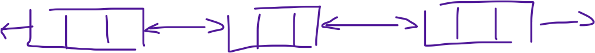
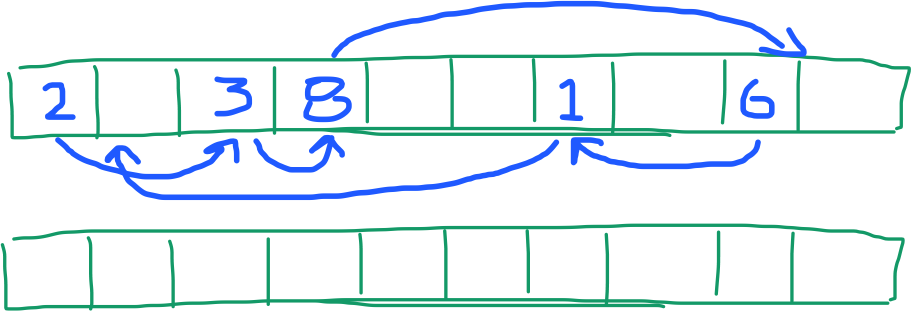
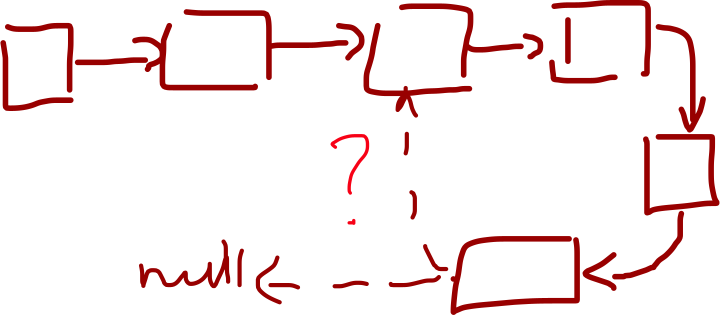
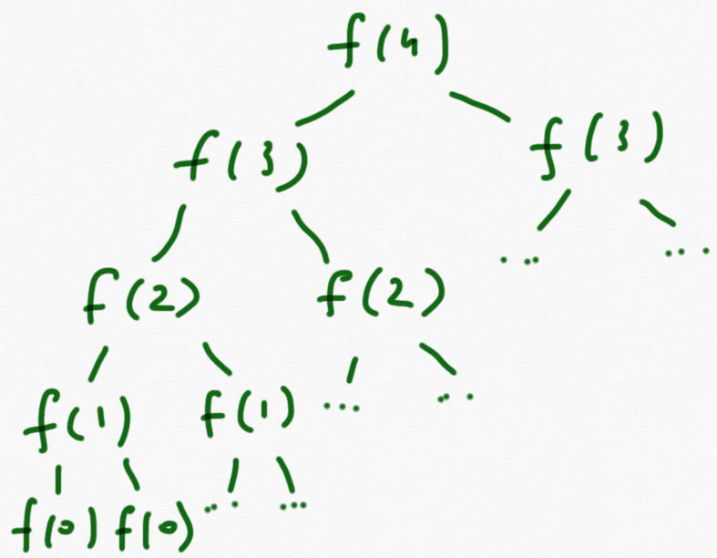
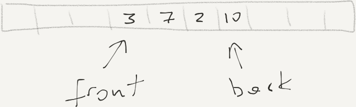
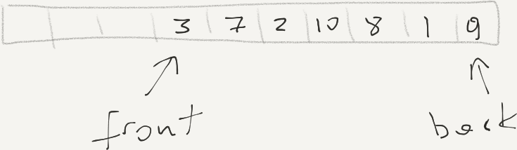
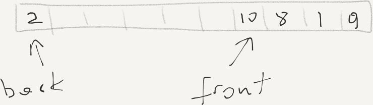
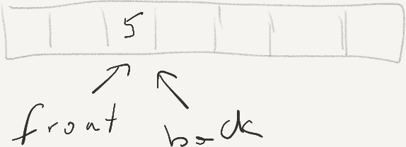
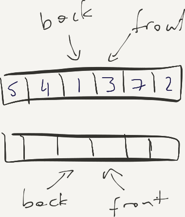

class: center, title-slide <br><br> ## CSCI-UA 480: APS ## Algorithmic Problem Solving <br/><br/><br/><br/><br/><br/><br/> ## Linear Data Structures .author[ Instructor: Joanna Klukowska <br> ] .license[ Copyright 2020 Joanna Klukowska. Unless noted otherwise all content is released under a <br> [Creative Commons Attribution-ShareAlike 4.0 International License](https://creativecommons.org/licenses/by-sa/4.0/).<br> Background image by Stewart Weiss<br>] --- layout:true template: default name: section class: inverse, middle, center --- layout:true template: default name: challenge class: challenge --- layout:true template: default name: poll class: inverse, full-height, center, middle --- layout:true template: default name: breakout class: breakout --- layout:true template:default name:slide class: slide .bottom-left[© Joanna Klukowska. CC-BY-SA.] --- ## Questions - homework questions ? --- ## Basic Linear Data Structures - list - array - linked - stack - queue - deque -- Operations that determine performance of a data structure: - insertion - deletion - query / find - update / modify -- __Data structures are separate from their implementations.__ For most there are many different ways to implement them. -- Most of the linear data structures are implemented in built-in libraries. When you use those libraries, you need to understand the performance of the operations (usually specified in the documentation). --- class: middle, center #Lists --- ## List as a Static Array _static array_ = fixed size, could be allocated on the stack or heap - natively supported by both C/C++ and Java - can be declared with appropriate size up-front if the problem specifies the maximum input size (HINT: use extra buffer for safety to avoid going out of bounds) - can be multi-dimensional: 1D, 2D, 3D, ... -- - allocated in memory as consecutive memory locations (important for fast accesses) - assume that indexes in use are all in the front (starting at low indexes) and there are no gaps ``` ------------------------------------- | 3 | 7 | -1| 0 | 15| -5| | | | ------------------------------------- ``` -- - performance of operations - insert/delete in the back O(1) - insert/delete in the front or _middle_ O(N) - update/modify O(???) - find O(???) --- ## List as a Static Array _static array_ = fixed size, no need to resize it (could be allocated on the stack or heap) - natively supported by both C/C++ and Java - can be declared with appropriate size up-front if the problem specifies the maximum input size (HINT: use extra buffer for safety to avoid going out of bounds) - can be multi-dimensional: 1D, 2D, 3D, ... - allocated in memory as consecutive memory locations (important for fast accesses) - assume that indexes in use are all in the front (starting at low indexes) and there are no gaps ``` ------------------------------------- | 3 | 7 | -1| 0 | 15| -5| | | | ------------------------------------- ``` - performance of operations - insert/delete in the back O(1) - insert/delete in the front or _middle_ O(N) - update/modify: using index O(1), if need to find, then see below - find O(N) if not sorted, O(logN) if sorted -- - solutions to problems often allocate a static array that is too large to guarnatee that it never needs to be resized -- (and to avoid out of bounds access problems) --- ## List as a Static Array __Java 1D and 2D static array__ ```Java int[] a; // declare the array a = new int[n]; // create the array for (int i = 0; i < n; i++) // elements are indexed from 0 to n-1 a[i] = 1; // initialize all elements to 1 ``` ```Java double[][] a; // declare a 2D array a = new double[m][n]; // create a 2D array with m rows and n columns for (int i = 0; i < m; i++) // initialize all values to 0 for (int j = 0; j < n; j++) a[i][j] = 0; ``` __C/C++__ ```C++ int a[n]; // declare/create the array for (int i = 0; i < n; i++) // elements are indexed from 0 to n-1 a[i] = 1; // initialize all elements to 1 ``` ```C++ double a[m][n]; // declare/create a 2D array with m rows and n columns for (int i = 0; i < m; i++) // initialize all values to 0 for (int j = 0; j < n; j++) a[i][j] = 0; ``` --- ## List as a Dynamic/Resizable Array - implementation provided by buil-in classes: - [`vector`](http://www.cplusplus.com/reference/vector/vector/) in C++ STL - [`ArrayList`](https://docs.oracle.com/javase/10/docs/api/java/util/ArrayList.html) or [`Vector`](https://docs.oracle.com/javase/10/docs/api/java/util/Vector.html) in Java (`ArrayList` is faster because it is unsynchronized) - used when required size is not known at compile time -- __performance of operations__ use __amortized analysis__: average/amortized performance of a sequence of operations rather than each single operation <br> reason: ??? --- ## List as a Dynamic/Resizable Array - implementation provided by buil-in classes: - [`vector`](http://www.cplusplus.com/reference/vector/vector/) in C++ STL - [`ArrayList`](https://docs.oracle.com/javase/10/docs/api/java/util/ArrayList.html) or [`Vector`](https://docs.oracle.com/javase/10/docs/api/java/util/Vector.html) in Java (`ArrayList` is faster because it is unsynchronized) - used when required size is not known at compile time __performance of operations__ use __amortized analysis__: average/amortized performance of a sequence of operations rather than each single operation <br> reason: because this way the cost of a resize and copy of data is averaged out (works only if resizing is done by multiplicative factor) -- - insert/delete in the back O(1) - insert/delete in the front or _middle_ O(N) - update/modify: using index O(1), if need to find, then see below - find O(N) if not sorted, O(logN) if sorted --- ## List as a Linked Structure ## (a Linked List) - implementation provided by buil-in classes: - `list` in C++ STL - `LinkedList` in Java - rarely used due to poor performance of accessing elements - (good exercise: implement your own in both Java and C++ to practice reference/pointer operations) - performance of operations - insert/delete in the back/front O(1) (assume a doubly linked list) - insert/delete in the _middle_ O(N) - update/modify: O(N) (except for in the front/back) - find O(N) --- ## List _Hybrids_ - dynamically allocated list that consists of short fixed sized arrays that are connected into a linked list .center[] -- - linked list in which the "links" are provided by indexes in a separate array .center[] --- template: challenge ## Challenge .left-column2[ Given a `head` pointer/reference to a singly linked list, determine if it has a loop. Determine the length of the loop if it exists. Restrictions: - Elements in the list are not unique. - Do not use extra storage proportional in size to the size of the list. - Do not change/destroy the initial list. ] .right-column2[<br/><br/> ] .below-column2[ .smaller[ (If you are familiar with this problem, let other people try to figure it out. DO NOT just yell out the solution!) ] ] -- .below-column2[ __Solution__ Rabbit and Turtle (two pointers) - start two pointers at head - advance rabbit two steps per iteration - advance turtle one step per iteration - if they meet (i.e., rabbit does not find the end of the list) then there is a loop and a node at which they meet is somewhere on the loop - trace through the loop with one of them to determine the number of nodes in the loop ] --- class:challenge ## Challenge - Can a singly linked list be circular? - Can a doubly linked list be circular? - Can a doubly linked list have a loop? --- class: middle, center ## Stacks --- ## Stack (first in last out, FILO) - implementation provided by buil-in classes: - `stack` in C++ STL - `Stack` in Java -- - operations performed - add/push O(1) - adds to the top - remove/pop O(1) - removes from the top - top O(1) - access the element on the top (optional) - empty O(1) - determine if the stack is empty (optional) -- - used in many algorithms for solving problems - postfix, prefix calculations and conversions - graph algorithms --- class:challenge ## Challenge: Function Call Stack What is the output of `fun(4)` ? ```C++ void fun (int x ) { if (x == 0) return; printf ("%d\n", x); fun(x-1); } ``` -- Output ``` 4 3 2 1 ``` --- class:challenge ## Challenge: Function Call Stack What is the output of `fun(4)` ? ```C++ void fun (int x ) { if (x == 0) return; fun(x-1); printf ("%d\n", x); } ``` -- Output ``` 1 2 3 4 ``` --- class:challenge ## Challenge: Function Call Stack What is the output of `fun(4)` ? ```C++ void fun (int x ) { if (x == 0) return; fun(x-1); fun(x-1); printf ("%d ", x); } ``` -- Output ` 1 1 2 1 1 2 3 1 1 2 1 1 2 3 4` -- .below-column2[ __For more complicated recursive functions, draw a function call tree.__ ] .left-column2[ .center[  ]] .right-column2[ .small[ Since the print statement happens __after__ the function call, the output can be generated using __postorder traversal__ of the function call tree. - f(0) prints nothing - f(1) prints just 1 - f(2) prints 2, after the previous two 1's from the calls to f(1), so each of the calls to f(2) results in 1 1 2 output - f(3) prints its 3 after the output for the two calls to f(2), so each of the calls to f(3) results in 1 1 2 1 1 2 3 - f(4) prints its 4 after the output for the two calls to f(4), for the final result shown above ] ] --- class:on_your_own ## OnYourOwn: Function Call Stack How about these functions? (Try it on your own after the class. ) .left-column2[ ```C++ void fun (int x ) { if (x == 0) return; printf ("%d ", x); fun(x-1); fun(x-1); printf ("%d ", x); } ``` ] .right-column2[ ```C++ void fun (int x, int y ) { if ( abs(x) >= 3 || abs(y) >= 2) return; printf ("%d %d\n", x, y); fun(x-1, y+1); fun(x , y-1); fun(x+1, y-1); printf ("%d %d\n", x, y); } ``` ] --- template: challenge ## Challenge: Brackets Matching Given a mathematical expression containing parentheses, i.e., `(` and `)`, determine if the expression is valid. Example (no symbols other than parentheses are shown): `()(())` => valid `)()(())(` => invalid `()()(` => invalid -- ------ - Can you solve it without using any data structures (i.e., no stack)? -- - Can you solve it for different types of brackets in a single expression? `{()()}[(())]` => valid `{)()(]` => invalid `(){(})` => invalid --- template: challenge ## Challenge: Brackets Matching __Solution with one kind of brackets__: - keep an integer that starts at zero - for each opening bracket increment it - for closed bracket decrement it (if less than zero, INVALID) if the value at the end is zero, then VALID, otherwise INVALID -- __Solution for mixed brackets__: - keep a stack of characters - for each opening brackets, push it on the stack - for each closing bracket, - if matches top of the stack, then pop the stack - otherwise, INVALID (this covers empty stack as well) if the stack is empty, then VALID, otherwise INVALID -- __What is the time complexity of these algorithms?__ -- - Linear in the length of the input string expression. --- class:on_your_own ## On Your Own: Library Classes as Stack Can we use dynamic/resizable array (`vector` in C++ or `Vector` in Java) to provide efficient implementation of a stack? This implementation should provide O(1) performance for push and pop operations. - If so, figure out how to do it (i.e., determine which functions in those classes provide the functionality that is required by the stack). --- ## Evaluating Mathematical Expressions Evaluate an arithmetic expression with only operators and numbers: - `1 + 2 + 3 => 6` - `1 + 2 * 3 => 7` - `1 * 2 * 3 => 6` - `1 * 2 + 3 => 5` -- Do the same with added parenthesis: - `1 + 2 * 3 => 7` - `(1 + 2) * 3 => 9` - `1 * 2 + 3 => 5` - `1 * (2 + 3) => 6` -- The code that can evaluate such expressions has to: - find and evaluate all subexpressions - for each operator figure out what its operands are It is easier if we can ignore the parenthesis and not have to worry about the operator precedence. --- ## Prefix and Postfix Notations ### (a.k.a. Polish and Reverse Polish Notation) __Infix notation__ is a notation for writing human readable arithmetic expressions in which the operator appears _in-between_ its operands. [__Prefix notation__](http://en.wikipedia.org/wiki/Polish_notation) is a notation for writing arithmetic expressions in which the operator comes _before_ its operands. [__Postfix notation__](http://en.wikipedia.org/wiki/Reverse_Polish_notation) is a notation for writing arithmetic expressions in which the operator comes _after_ its operands. | infix | prefix | postfix | | :--------------| :--------------- | :----------- | | `2 + 5` | `+ 2 5` | ` 2 5 + ` | | `(2 + 4) * 5` | `* + 2 4 5` | ` 2 4 + 5 *` | | `2 + 4 * 5` | `+ 2 * 4 5` | ` 2 4 5 * +` | --- ## Evaluate Prefix Expressions - scan the given prefix expression from right to left - for each token in the input prefix expression - if the token is an operand then - push it (its value) onto a stack - else if the token is an operator then - operand1 = pop stack - operand2 = pop stack - compute operand1 operator operand2 - push result onto stack - return top of stack as result --- ## Evaluate Postfix Expressions - scan the given postfix expression from left to right - for each token in the input postfix expression - if the token is an operand - push it (its value) onto a stack - else if the token is an operator - operand2 = pop stack (!!!) - operand1 = pop stack - compute operand1 operator operand2 - push result onto stack - return top of the stack as result --- ## Convert Infix to Postfix - for each token in the input infix string expression - if the token is an operand - append to postfix string expression - else if the token is a left brace - push it onto the operator stack - else if the token is an operator - if the stack is not empty - while (top element on the stack is not a left brace) AND (the operator on top of the stack has higher or equal ) (this operator has higher or equal precedence to the one at the top of the stack) - pop the stack and append to postfix string expression - push it (the current operator) onto the operator stack - else if the token is a right brace - while the operator stack is not empty - if the top of the operator stack is not a matching left brace - pop the operator stack and append to postfix string expression - else - pop the left brace and discard - break - while the operator stack is not empty - pop the operator stack and append to postfix string expression --- template: challenge ## Challenge: Infix to Postfix Apply the infix to postfix conversion to the following expression: $$4 + (5 * 6) / (1 + 2 + 3) $$ Show the content of the operator stack and the postfix expression after each iteration of the outermost for loop. -- You should end up with `4 5 6 * 1 2 + 3 + / +`. (full solution on the next slide) --- class:challenge .smaller[ |Infix| Stack| Postfix | Comments| |:---|:---|:---|:---| | __4__ + (5 * 6) / (1 + 2 + 3) | | 4 | | | 4 __+__ (5 * 6) / (1 + 2 + 3) | + | 4 | | | 4 + **(**5 * 6) / (1 + 2 + 3) | +( | 4 | | | 4 + (**5** * 6) / (1 + 2 + 3) | +( | 4 5 | | | 4 + (5 __*__ 6) / (1 + 2 + 3) | +(* | 4 5 | | | 4 + (5 * __6__) / (1 + 2 + 3) | +(* | 4 5 6 | | | 4 + (5 * 6__)__ / (1 + 2 + 3) | + | 4 5 6 * | A | | 4 + (5 * 6) __/__ (1 + 2 + 3) | / | 4 5 6 * + | B | | 4 + (5 * 6) / __(__1 + 2 + 3) | /( | 4 5 6 * + | | | 4 + (5 * 6) / (__1__ + 2 + 3) | /( | 4 5 6 * + 1 | | | 4 + (5 * 6) / (1 __+.tiny[A]__ 2 + 3) | /(+.tiny[A] | 4 5 6 * + 1 | C | | 4 + (5 * 6) / (1 + __2__ + 3) | /(+.tiny[A] | 4 5 6 * + 1 2 | | | 4 + (5 * 6) / (1 + 2 __+.tiny[B]__ 3) | /(+.tiny[B] .tiny[] | 4 5 6 * + 1 2 +.tiny[A] | | | 4 + (5 * 6) / (1 + 2 + __3__) | /(+.tiny[B] | 4 5 6 * + 1 2 +.tiny[A] 3 | | | 4 + (5 * 6) / (1 + 2 + 3__)__ | / | 4 5 6 * + 1 2 +.tiny[A] 3 +.tiny[B] | D | | 4 + (5 * 6) / (1 + 2 + 3) | | 4 5 6 * + 1 2 +.tiny[A] 3 +.tiny[B] / | E | ] .small[A: pop operators down to `(` and then remove the bracket ] <br> .small[B: `/` has higher precedence than `+`] <br> .small[C: `+` operator marked with `A` to distinguish from the next one] <br> .small[D: pop everything up to and including the left bracket] <br> .small[E: end of the expression, pop remaining operators and append them to the postfix ] <br> --- class: middle, center ## Queues --- ## Queues (first in first out, FIFO) - implementation provided by buil-in classes: - `queue` in C++ STL - `Queue` in Java (note that this is an interface that is implemented by several different classes in Java) -- - operations performed - add/enqueu/push O(1) - adds to the back of the queue - remove/dequeue/pop O(1) - removes from the front of the queue - empty O(1) - determine if the stack is empty (optional) --- ## Array as an Efficient Queue -- - keep track of front (first element) and back (last element) .center[] -- - what do we do if the back reaches the end of the array? .center[] -- use a circular array (and modular arithmetic) to rotate and move back to the beginning of the array (low indexes) .center[] --- ## Array as an Efficient Queue - how do we distinguish between an empty and full queue? (what should be the values of front and back _pointers_ for an empty queue?) .left-column2[ When the last element is removed, the front moves in front of the back. But this is also the case for the full array. ] -- .right-column2[] -- .below-column2[ - Keep track of the number of elements in the queue. - Allocate large enough array that full never happens. ] --- class: middle, center ## Deque ## (= double ended queue) --- ## Deque - implementation provided by buil-in classes: - `deque` in C++ STL - `Deque` in Java (note that this is an interface that is implemented by several different classes in Java) -- - operations performed - push front, push back O(1) - add to either end of the deque - pop front, pop back O(1) - remove from either end of the deque - empty O(1) - determine if the deque is empty (optional) --- class: middle, center ## More Problems --- template: challenge ## Challenge: Smallest So Far Given a list of N positive integers (1 <= N <= $10^6$), compute for each element A[i], what is the smallest element to its left (excluding itself). Sample Input Array: ``` ----------------------------- array: | 5 | 4 | 8 | 3 | 9 | 2 | 10| ----------------------------- ``` Smallest to the Left Array: ``` ----------------------------- array: | --| 5 | 4 | 4 | 3 | 3 | 2 | ----------------------------- ``` --- template: challenge ## Possible solutions __First Attempt__ - for every element A[i] check all the elements to its left - brute force $\rightarrow$ time $O(N^2)$ ------ -- __Second Attempt__ __Obeservation__: the sequence of the "smallest to the left" is monotonically decreasing -- Assume - $A$ is the given array - $STL$ is the array of smallest to the left that we are generating -- Calculate STL as follows: - $STL[0]$ is undefined (since there is nothing to the left of $A[0]$) - $STL[1] = A[0]$ (since that is the only value to the left) - $STL[i] = min( A[i-1], STL[i-1] )$, for $i > 1$ This is $O(N)$ --- template: challenge ## Challenge: Smaller than Current Given a list of N positive integers (1 <= N <= $10^6$), compute for each element A[i], what is the __rightmost__ element to its left that is strictly smaller than A[i]. .left-column2[ Sample Input Array: ``` ----------------------------- array: | 5 | 4 | 8 | 3 | 9 | 2 | 10| ----------------------------- ``` Rightmost Smaller Solution Array: ``` ----------------------------- array: | --| --| 4 | --| 3 | --| 2 | ----------------------------- ``` ] .right-column2[ Sample Input Array: ``` ----------------------------- array: | 1 | 4 | 6 | 13| 6 | 19| 10| ----------------------------- ``` Rightmost Smaller Solution Array: ``` ----------------------------- array: | --| 1 | 4 | 6 | 4 | 6 | 6 | ----------------------------- ``` ] --- template: challenge .left-column2[ ## First Attempt - for every element A[i] check all the elements to its left (preferably starting from A[i] and scanning towards low indexes) - brute force $\rightarrow$ time $O(N^2)$ But what is the actual algorithm for doing this? ------ ] -- .right-column2[ Assume - $A$ is the given array - $RST$ is the array of rightmost smaller than values __Question__: How far down the array do we need to go to find an answer for A[i]? - for j from i-1 down to 0 - if $A[j] > A[i]$, continue - if $A[j] == A[i]$, then $RST[i] = RST[j]$ is the answer (and we break from the loop) - if $A[j] < A[i]$, then $RST[i] = A[j]$ is the answer (and we break from the loop) - if $RST[i]$ is still not set, then it is undefined This has to be repeated for each A[i] ] -- What happens with this array? ``` ----------------------------- | 1 | 10| 9 | 8 | 7 | 6 | 5 | ----------------------------- ``` and this? ``` ----------------------------- | 1 | 10| 9 | 2 | 7 | 6 | 5 | ----------------------------- ``` -- __Observation__ spans of monotonically decreasing values larger than a current value, cannot contain the answer. -- __Idea__ keep track of the values that could be RST, and ignore others. --- template: challenge ## Second Attempt - RST[0] = undefined - stack.push(A[i]) - for i from 1 to N-1 - while stack not empty and top of the stack >= A[i] - pop the stack - if stack is empty, set RST[i] to undefined - else set RST[i] to the top of the stack (do not pop it) - push A[i] onto the stack -- .left-column2[ Let's apply it to ``` ----------------------------- | 1 | 4 | 6 | 13| 6 | 19| 10| ----------------------------- ``` ] -- .right-column2[ | A[i] | stack before | RST[i] | stack after | |:---:|:---|:---:|:---| | 1 | | -- |1 | | 4 | 1 | 1 | 1 4 | | 6 | 1 4 | 4| 1 4 6 | | 13 | 1 4 6 | 6 | 1 4 6 13 | |6 | 1 4 ~~6 13~~| 4 | 1 4 6| | 19 | 1 4 6 | 6 | 1 4 6 19 | | 10 | 1 4 6 ~~19~~ | 6 | 1 4 6 10| ] -- What is the performance of this algorithm? -- $O(N)$ -- What are good test cases for this problem? --- class:on_your_own ## OnYourOwn: Modified Stack __Task:__ Implement a stack that supports $O(1)$ operations for push, pop, top, __AND__ getMin (finds the smallest value in the current stack). -- Hint 1: use a stack to keep track of the smallest element(s). -- Hint 2: does your algorithm work if we allow duplicate values in the stack? </optgroup>